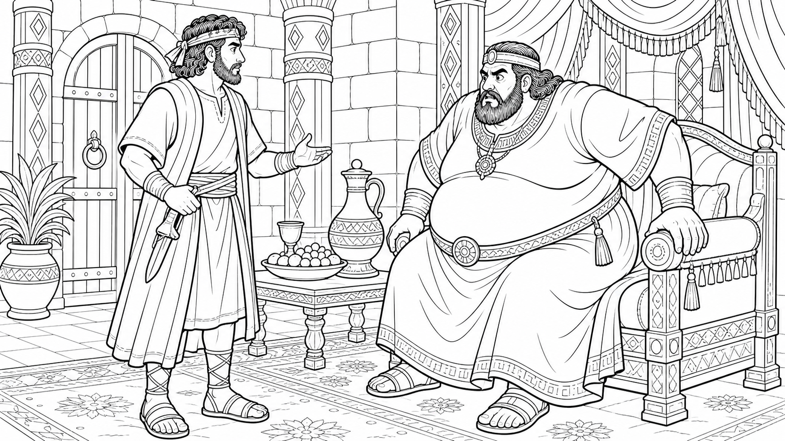

Adventures in the Bible
The Secret Strike
Sin brings consequences, but repentance brings deliverance.
Today's Big Truth
God is merciful to deliver sinners who turn back to Him.
Memory Verse
Proverbs 28:13
He that covereth his sins shall not prosper: but whoso confesseth and forsaketh them shall have mercy.
Main Applications
- Sin is serious and always brings consequences.
- Do not hide sin, excuse sin, or keep going back to sin.
- Seek God's forgiveness and mercy, and turn from your sin.
- God can use unexpected people who are willing to obey Him.
- Courage means doing right because God is greater than the danger.
Find The Answers In Judges 3:12-30
- What king oppressed Israel?
- How many years did Israel serve Eglon?
- What did Israel do after years of trouble?
- Who did God raise up as a deliverer?
- What was unusual about Ehud?
- What did Ehud hide under his clothes?
- What did Ehud say he had for the king?
- What did Ehud blow after he escaped?
- How long did the land have rest?
- Why should we not hide or excuse our sin?
Talk About It At Home
- What consequence did Israel face because of sin?
- What did God do when Israel cried unto Him?
- What should we do instead of hiding sin?
- How is Jesus the greatest Deliverer?
The Secret Strike

Ehud stood before a powerful ruler, but God was working to deliver His people.